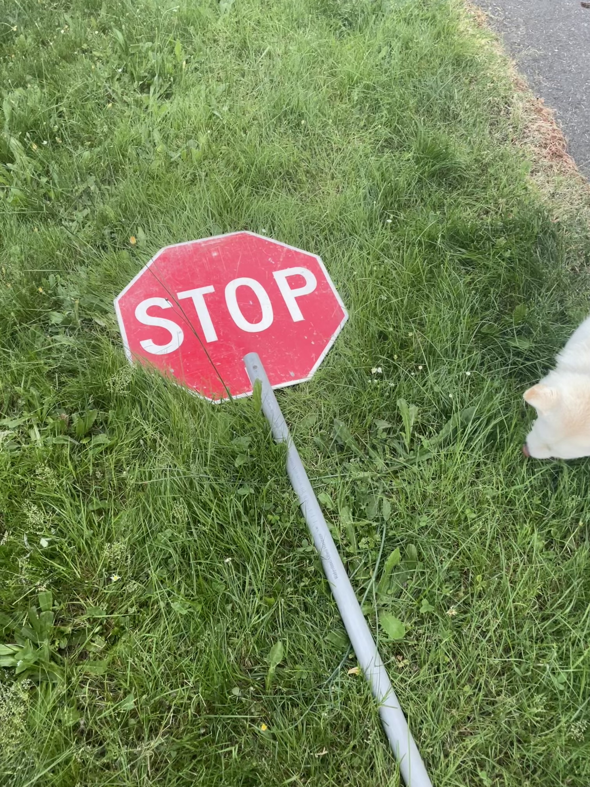

|  |
|---|
Here are some resources to learn about and learn about care for Korean Jindos!
Jindos are from Korea and originally breed as hunting dogs.
American Kennel Club - Jindo Breed: https://www.akc.org/dog-breeds/jindo/
Wikipedia - Jindos: https://en.wikipedia.org/wiki/Korean_Jindo
My Family Vet - Korean Jindo: https://myfamilyvet.com/client-resources/breed-info/korean-jindo/
Pet Assure - Jindo: https://www.petassure.com/new-newsletters/jindo-another-little-known-breed/
Quora - Jindo Tips: https://www.quora.com/What-are-some-tips-for-caring-for-a-Korean-Jindo-dog